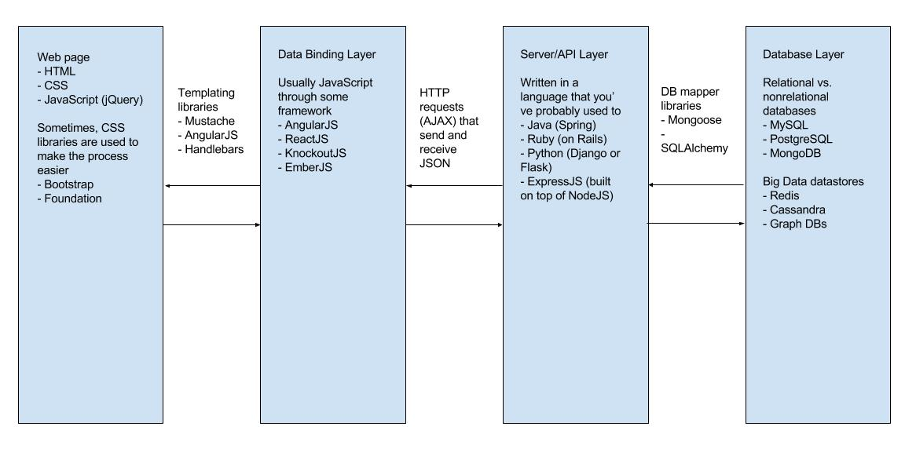

Web Development
- Part 1: Intro to HTML/CSS/JS
- Part 2: Intro to data-binding
- Part 3: Intro to a backend
Part 1: Intro to HTML/CSS/JS
Agenda
- A High-Level Overview
- Walk-through Tutorial
- Brainstorm and work on your own website!
Don't worry, if you're out of ideas, we have some.
The Building Blocks of Websites
What is HTML?
- Hypertext Markup Language
- A scripting language - interpreted line-by-line by a web browser to render different elements
- Makes use of starting and ending tags
- The most recent version is HTML5
What is CSS?
- Cascading Style Sheet
- Provides web developers with ability to customize how their websites look
- You can change any attribute of any HTML element.
- Examples: fonts, colors, borders, measurements
- Many frameworks exist that aid in common styling (especially for responsive styling)
- The most recent version is CSS3
What is Javascript?
- Provides web developers with ability to do interactions and animations on their websites
- Most commonly used to react to user interactions on the website
- Many frameworks that exist built on top of this language
- The most recent version is ES6 (Ecmascript 6).
How powerful are these tools?
Tutorial - First Block
Github repository: web-skeleton
Complete tutorial: web-complete
Slides: tutorials/web-intro
Popular Frameworks
- CSS - Bootstrap, Foundation, Material Design Lite, and so many more...
- Javascript - jQuery, ReactJS, AngularJS, and so many more...
- Fonts / Icons - Google Fonts, FontAwesome, Material Design Icons, and so many more...
Expand the Project
- Create your own personal portfolio.
- Design a website for one of your favorite nonprofits or volunteering causes or businesses
- Explore using a CSS framework or JS framework in your website
- Explore some of the themes you find in websites today: parallax scrolling, responsive grids, CSS or Javascript animations.
Sources of inspiration
Next Up: Part 2
We'll introduce the concept of data-binding and do a project with Jeopardy questions!
Part 2: Intro to data-binding
Agenda
- A High-Level Overview
- Walk-through Tutorial
- Extend the tutorial
- What's next?
The Building Blocks of Websites
Model-View-Controller
- A software architecture pattern, popular for web apps
- Model = actual representation of data
- View = how the data is displayed to the user
- Controller = handles any changes / events from the view to model
Pervasiveness in Web
- First started off with backend/server-side frameworks - e.g. Ruby on Rails, Django
- Many of these frameworks had special mechanisms to inject different data-binding attributes into the client-side
- jQuery can be used to do this databinding, but it was super verbose and the logic got complicated
- As client-side technologies improved, Javascript frameworks emerged: AngularJS, EmberJS, Backbone, KnockoutJS
Some Websites Made with AngularJS
- The Weather Channel
- Forbes
- GroupMe
- Tinder
Tutorial - First Block
Github repository: web-II-skeleton
Complete tutorial: web-II-complete
Slides: tutorials/web-intro
Performance and Next Steps
- Reading from a JSON file is very expensive
- We need some way to integrate a database
- Making list views - hard to do if we can't read an entire file
- So next steps: we can do list views with pagination if we have a database
Web Components: An Alternative to MVC
- Be able to create custom HTML tags that represent custom objects
- Nesting becomes more semantic and more natural
- ReactJS - the big framework that embraces this
Part 3: Intro to backend
The Building Blocks of Websites
Client vs. Server
- Anything the user sees and interacts with is considered client-side.
- Server-side usually means business logic. Responsible for the feedback for the user's interactions. Interacts with database. The response to the request.
- Ex. Logging in
-
- Client Side - User logs in with an email address and a password. Sanity check the user's email to be an actual email. Make sure form doesn't reveal the password characters. Sends request to server with credentials.
- Server Side - Checks if credentials match in database of registered users. Responds with affirmation or an error (password incorrect, etc).
Types of Databases
- SQL databases - also known as relational - uses tables to represent different data components and queries represent relations between different tables - data is structured
- NoSQL databases - also known as document-based - uses JSON-like documents to represent different data components and might have replication and duplication - data is sometimes unstructured or semi-structured
- Graph databases - nodes represent individual data points, edges represent relations between two nodes - unstructured


What is Firebase?
- A Database as a Service maintained by Google
- Allows for JSON-like documents to be stored
- Provides easy-to-use tools for user authentication
- Provides realtime updates to data storage.
- Able to be integrated into iOS, Android and web apps through different SDKs
Tutorial
- Github Repo: backend-intro